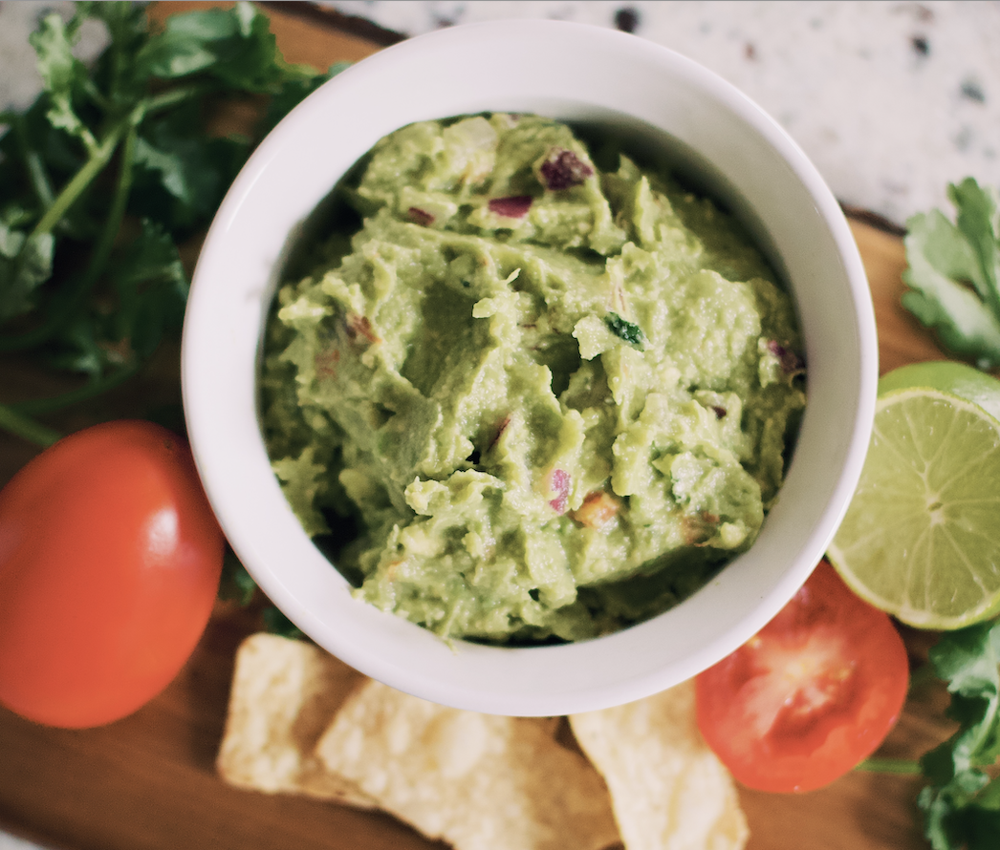
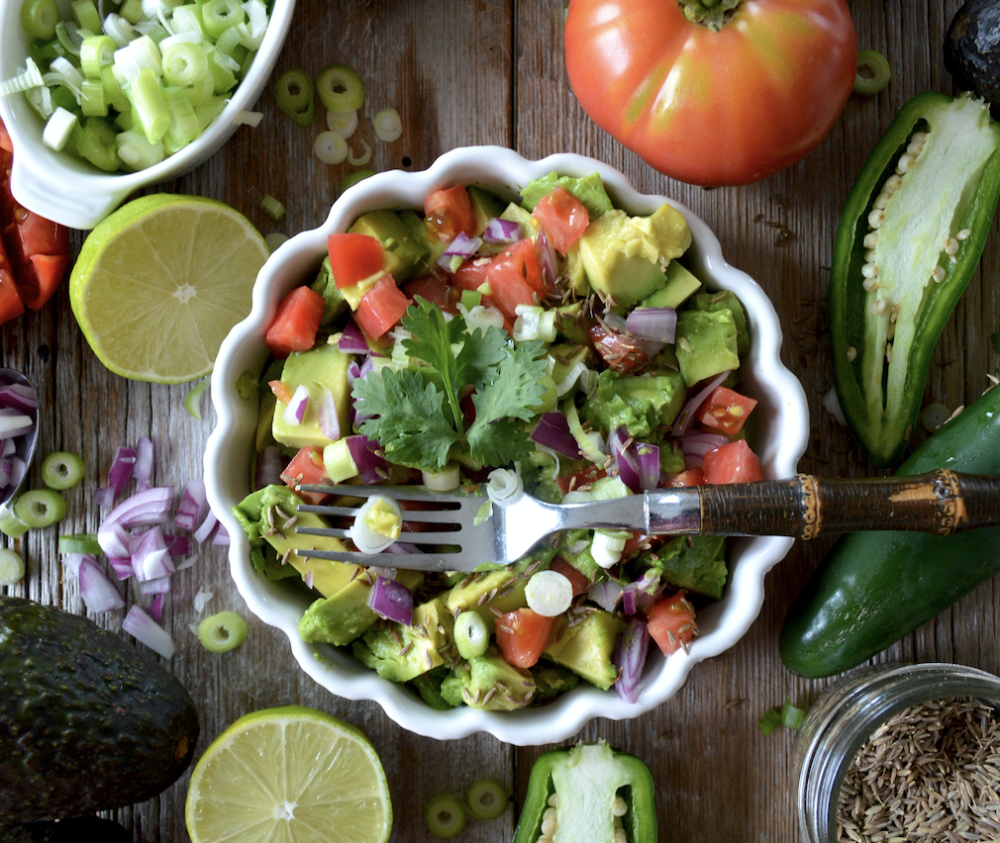
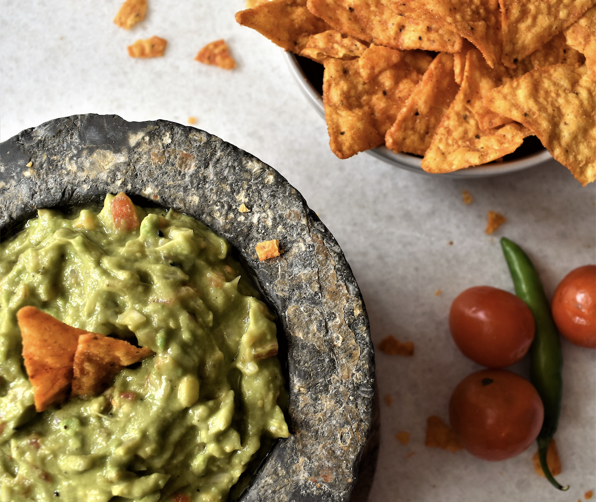
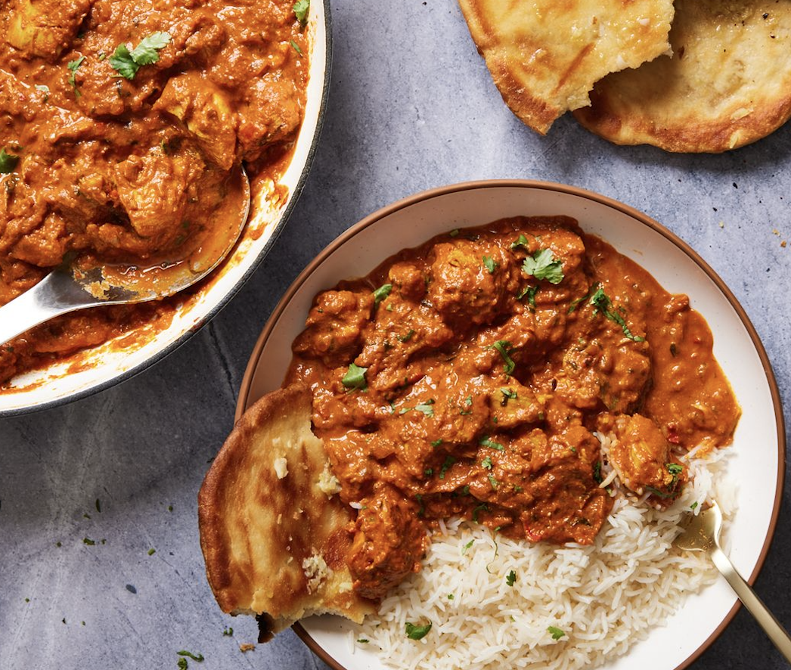
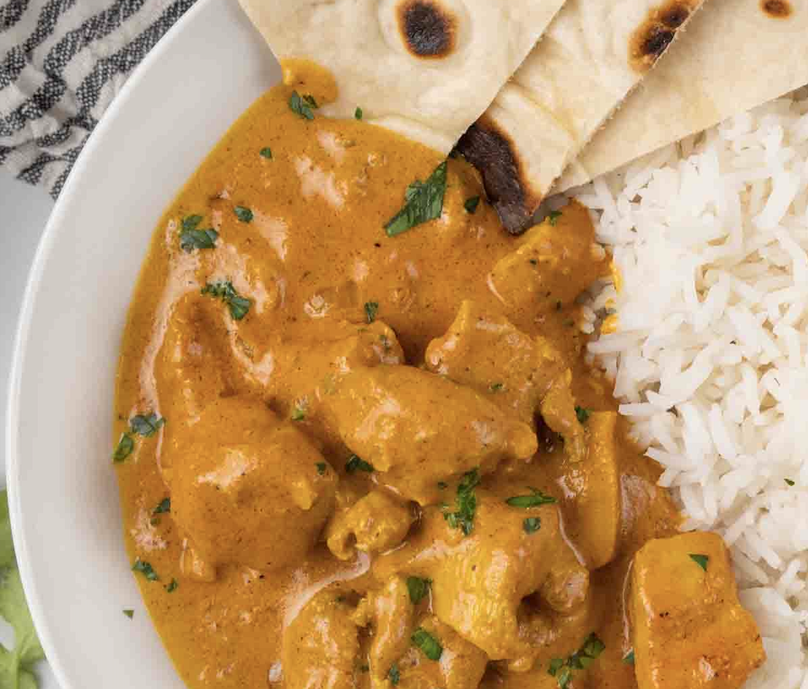
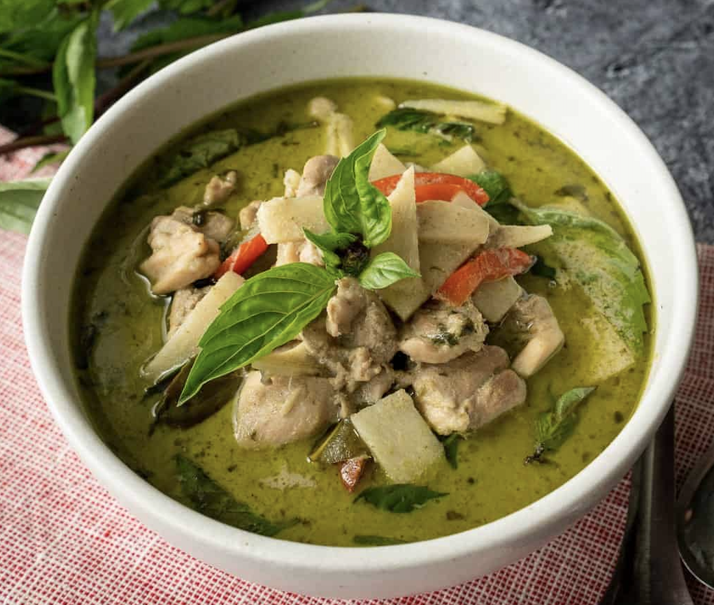
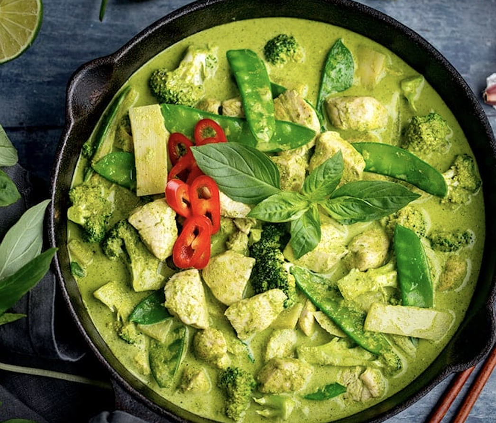
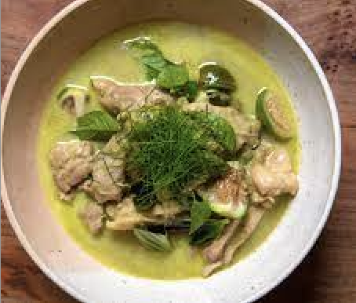
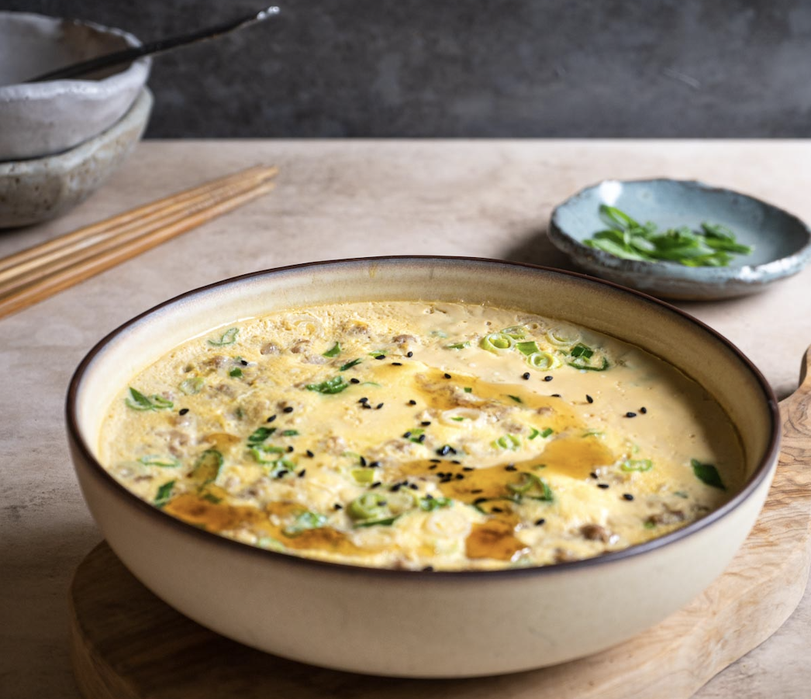

Recipes
Guacamole
Origin: Mexican
Source: Family Recipe
Category: Appetizer/Snack, Condimen
Guacamole is a delicious Mexican dip that's perfect for parties or as a topping for your favorite dishes. This family recipe has been passed down for generations and is loved by everyone who tries it.
Recipe Steps
- Prepare the Avocados: Cut the avocados in half, remove the pits, and scoop the flesh into a mixing bowl. Use a fork to mash the avocados to your desired level of smoothness. Some prefer it chunky, while others like it creamy.
- Add the Lime Juice: Squeeze the juice of two limes over the mashed avocados. The lime not only adds a zesty flavor but also helps prevent the guacamole from browning.
- Combine the Ingredients: Add the diced red onion, tomatoes, jalapeño peppers, minced garlic, and chopped cilantro to the mashed avocados. These ingredients provide a balance of textures and flavors.
- Season to Taste: Season the guacamole with salt and pepper, adjusting the amounts to suit your preferences. Keep in mind that you can always add more, so start with a little and taste as you go.
- Mix Thoroughly: Gently fold all the ingredients together until they are well combined. Be careful not to overmix, as you want to maintain some texture in the guacamole.
- Taste and Adjust: Give the guacamole a taste test. If you feel it needs more acidity, you can add extra lime juice. If it's not spicy enough, you can add more jalapeño or a pinch of cayenne pepper.
Recipe Ingredients
- 3 ripe avocados
- 1 small red onion, finely diced
- 2 ripe tomatoes, diced
- 1-2 jalapeño peppers, seeded and finely chopped (adjust to taste)
- 3 cloves garlic, minced
- 1/4 cup fresh cilantro, chopped
- Juice of 2 limes
- Salt and pepper, to taste
Additional Food Images
 BLAT Sandwich

Origin: United States
Source: Modern American cuisine
Category: Sandwich
The BLAT sandwich is a delightful twist on the classic BLT, featuring the beloved ingredients of bacon, lettuce, avocado, and tomato. This mouthwatering creation combines crispy, savory bacon with the creamy richness of avocado, fresh lettuce, and juicy tomatoes, all nestled between slices of your favorite bread. It's a satisfying and flavor-packed sandwich that's perfect for a quick lunch or a light dinner.
Recipe Steps
- Cook the Bacon: In a skillet over medium heat, cook the bacon slices until they are crispy and golden brown. Place them on a paper towel-lined plate to drain excess grease.
- Prep the Avocado: While the bacon is cooking, cut the ripe avocado in half, remove the pit, and slice the flesh into thin, even pieces.
- Prepare the Bread: Toast the four slices of bread to your desired level of crispiness. You can do this in a toaster or a separate skillet with a touch of butter for extra flavor.
- Assemble the Sandwich.
- Slice and Serve: Carefully cut the sandwich in half diagonally, creating two triangular halves. Secure each half with a toothpick or wrap in parchment paper for easy handling. Serve your BLAT sandwich immediately, and enjoy this delicious fusion of flavors and textures!
Recipe Ingredients
- 4 slices of your preferred bread (white, whole wheat, or sourdough)
- 8 slices of crispy bacon
- 1 ripe avocado, sliced
- 4 lettuce leaves (such as iceberg or romaine)
- 2 medium-sized tomatoes, thinly sliced
- Mayonnaise (optional)
- Juice of 2 limes
- Salt and pepper, to taste
Additional Food Images


Chicken Tikka Masala
Origin: Indian subcontinent
Source: Indian cuisine
Category: Main course, Indian cuisine
Chicken Tikka Masala is a popular and flavorful Indian dish that combines tender pieces of marinated chicken with a rich and creamy tomato-based sauce. This dish is known for its harmonious blend of spices, making it a beloved choice in Indian cuisine worldwide.
Recipe Steps
Marinating the Chicken:
- In a bowl, combine yogurt, ginger-garlic paste, lemon juice, ground cumin, ground coriander, turmeric, paprika or chili powder, and salt.
- Add the chicken pieces to the marinade and coat them well.
- Cover and refrigerate for at least 1 hour, or overnight for best results.
Grilling the Chicken:
- Preheat your grill or broiler to high heat.
- Thread the marinated chicken onto skewers and grill or broil for about 10-15 minutes, turning occasionally, until the chicken is cooked through and has a slight char.
Making the Sauce:
- In a large skillet or saucepan, heat the vegetable oil over medium heat.
- Add chopped onions and sauté until they turn translucent.
- Stir in minced garlic and ginger, cooking for another 1-2 minutes until fragrant.
- Add ground cumin, ground coriander, garam masala, and chili powder. Cook for a few more minutes, allowing the spices to bloom.
- Pour in the tomato puree and simmer for about 10 minutes, or until the sauce thickens.
- Stir in the heavy cream and let it simmer for an additional 5 minutes.
- Season the sauce with salt and pepper to taste.
Final Assembly:
- Add the grilled chicken pieces to the sauce, stirring to coat them evenly. Simmer for a few minutes to heat the chicken through.
- Garnish with fresh cilantro leaves.
- Serve hot with rice, naan, or your choice of bread.
Recipe Ingredients
For the Chicken Marinade:
- 500g boneless chicken, cut into bite-sized pieces
- 1 cup plain yogurt
- 2 tablespoons ginger-garlic paste
- 1 tablespoon lemon juice
- 1 teaspoon ground cumin
- 1 teaspoon ground coriander
- 1/2 teaspoon turmeric
- 1/2 teaspoon paprika or chili powder
- Salt to taste
For the Sauce:
- 2 tablespoons vegetable oil
- 1 onion, finely chopped
- 2 cloves garlic, minced
- 1 tablespoon ginger, minced
- 1 teaspoon ground cumin
- 1 teaspoon ground coriander
- 1 teaspoon garam masala
- 1/2 teaspoon chili powder (adjust to taste)
- 1 cup tomato puree
- 1 cup heavy cream
- Salt and pepper to taste
- Fresh cilantro leaves for garnish
Additional Food Images
Green Curry
Origin: Thailand
Source: Thai cuisine
Category: Main course
Green Curry, a beloved Thai dish, is a fragrant and flavorful masterpiece that combines the perfect balance of spicy, sweet, and savory flavors. This dish is renowned for its vibrant green color, which is derived from a blend of fresh herbs and aromatic ingredients. It's typically made with a choice of protein, such as chicken, shrimp, or tofu, and is served with steamed jasmine rice. Prepare to embark on a culinary journey to Thailand as you savor the exotic taste of Green Curry.
Recipe Steps
- Prepare the Ingredients: Cut the chicken, shrimp, or tofu into bite-sized pieces. Wash and chop the vegetables as desired. Tear the kaffir lime leaves into pieces, and if you like it spicy, thinly slice the Thai bird's eye chilies.
- Heat the Oil: In a large skillet or wok, heat the vegetable oil over medium heat. Add the green curry paste and stir-fry for a couple of minutes until it becomes fragrant.
- Add the Protein: Add the chicken, shrimp, or tofu to the skillet and stir-fry until the protein is cooked through and slightly browned.
- Stir in the Vegetables: Add the mixed vegetables and stir-fry for a few minutes until they begin to soften.
- Pour in the Coconut Milk: Pour the coconut milk into the skillet, and stir to combine it with the curry paste and other ingredients. Bring the mixture to a gentle simmer.
- Season and Simmer: Add the sugar, torn kaffir lime leaves, Thai bird's eye chilies (if using), and fish sauce (or soy sauce for a vegetarian version) to the curry. Stir well and let it simmer for about 10-15 minutes, allowing the flavors to meld and the sauce to thicken.
- Finish with Fresh Herbs: Just before serving, stir in the fresh Thai basil leaves, letting them wilt into the curry.
- Serve: Ladle the Green Curry over steamed jasmine rice, garnish with sliced red chili pepper, and enjoy your authentic taste of Thailand.
Recipe Ingredients
- 2 tablespoons green curry paste
- 1 can (14 ounces) coconut milk
- 1 pound boneless chicken breasts, shrimp, or tofu (cut into bite-sized pieces)
- 1 cup mixed vegetables (such as bell peppers, bamboo shoots, and Thai eggplants)
- 2 tablespoons vegetable oil
- 2 teaspoons sugar
- 2 kaffir lime leaves (torn into pieces)
- 1-2 Thai bird's eye chilies (optional, for extra heat)
- 2 tablespoons fish sauce (or soy sauce for a vegetarian version)
- 1 tablespoon fresh Thai basil leaves (or regular basil if unavailable)
- 1 red chili pepper, thinly sliced (for garnish)
- Cooked jasmine rice, for serving
Additional Food images
 Stewed Eggs with Minced Meat
Origin: Chinese, Thai, and Vietnamese cuisine
Source: Family Recipe
Category: Main course, Comfort food
Stewed Eggs with Minced Meat is a comforting and flavorful dish enjoyed in various cuisines around the world. This delectable combination of tender eggs and savory minced meat, simmered in a rich and aromatic sauce, creates a satisfying meal that's perfect for both lunch and dinner.
Recipe Steps
- Boil the Eggs: Place the eggs in a saucepan and cover them with water. Bring the water to a boil and let the eggs cook for 7-8 minutes for a slightly runny yolk or 10-12 minutes for a firmer yolk. Once cooked, remove the eggs, cool them in cold water, and peel them.
- Saute the Onions and Garlic: In a skillet, heat the vegetable oil over medium heat. Add the finely chopped onions and minced garlic and sauté until they become translucent.
- Cook the Minced Meat: Add the minced meat to the skillet and cook until it's browned and cooked through. Break up any clumps of meat as it cooks.
- Season the Meat: Stir in soy sauce, oyster sauce, sugar, salt, and pepper. Mix the seasonings well with the meat.
- Add the Broth: Pour in the chicken or vegetable broth and bring the mixture to a gentle simmer.
- Simmer and Stew: Carefully place the boiled and peeled eggs into the skillet, ensuring they are partially submerged in the sauce. Cover the skillet and let everything simmer for about 20-25 minutes. This allows the flavors to meld, and the sauce to thicken slightly.
- Serve: Dish out the stewed eggs with minced meat, garnish with fresh cilantro leaves, and enjoy this comforting and satisfying meal.
Recipe Ingredients
- 4 large eggs
- 200g minced meat (chicken, pork, or beef)
- 1 small onion, finely chopped
- 2 cloves garlic, minced
- 2 tablespoons vegetable oil
- 2 tablespoons soy sauce
- 1 tablespoon oyster sauce
- 1 teaspoon sugar
- 1/2 cup chicken or vegetable broth
- Salt and pepper to taste
- Fresh cilantro leaves for garnish